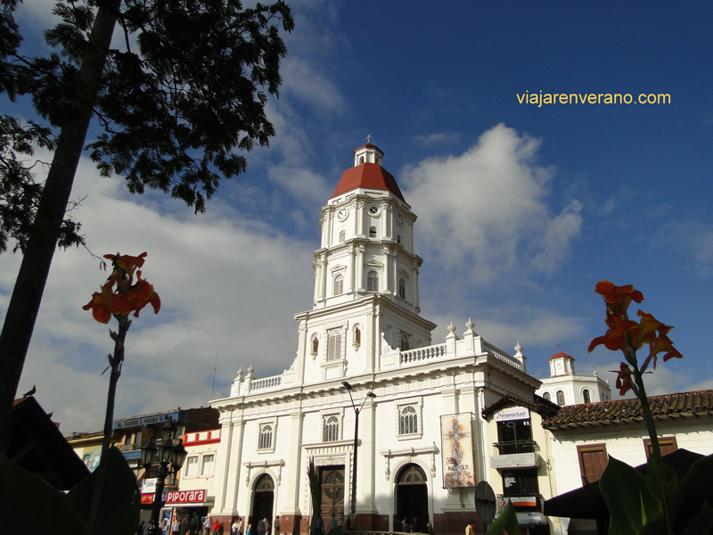

Caldas Antioquia
Caldas es un municipio de Colombia, que está ubicado en el Valle de Aburrá del departamento de Antioquia. Con una altitud media de 1750 metros sobre el nivel del mar es uno de los municipios que conforman el Valle de Aburrá y es conocido por ser el municipio donde nace el río Medellín, más concretamente en el Alto de San Miguel